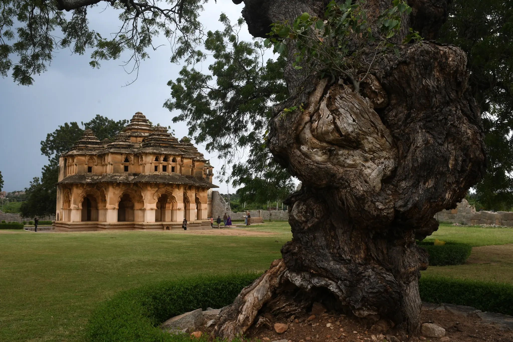
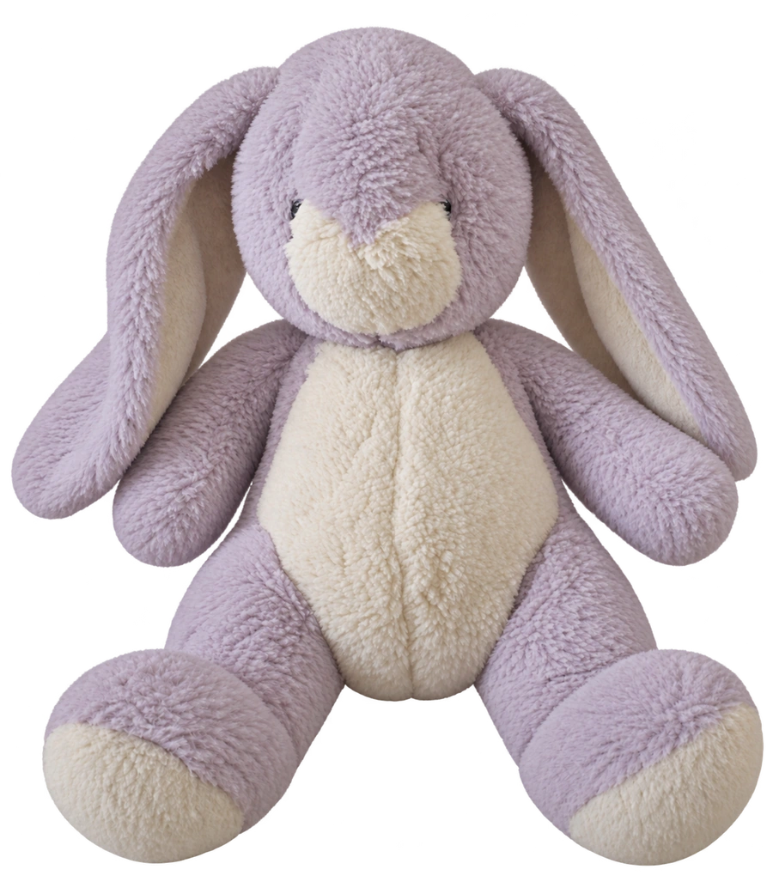
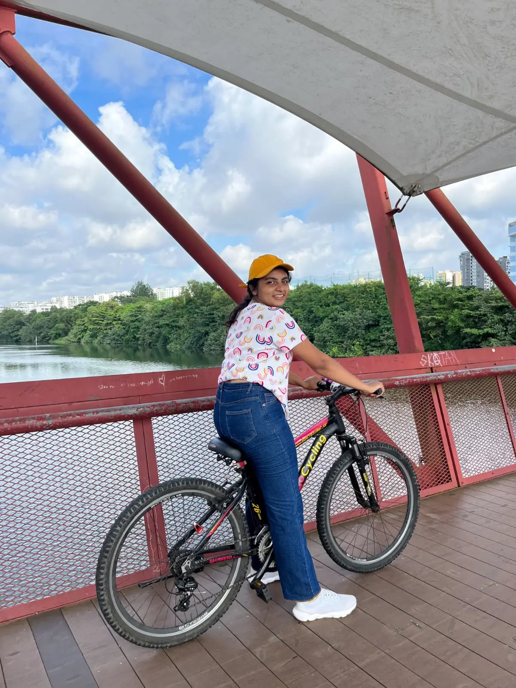
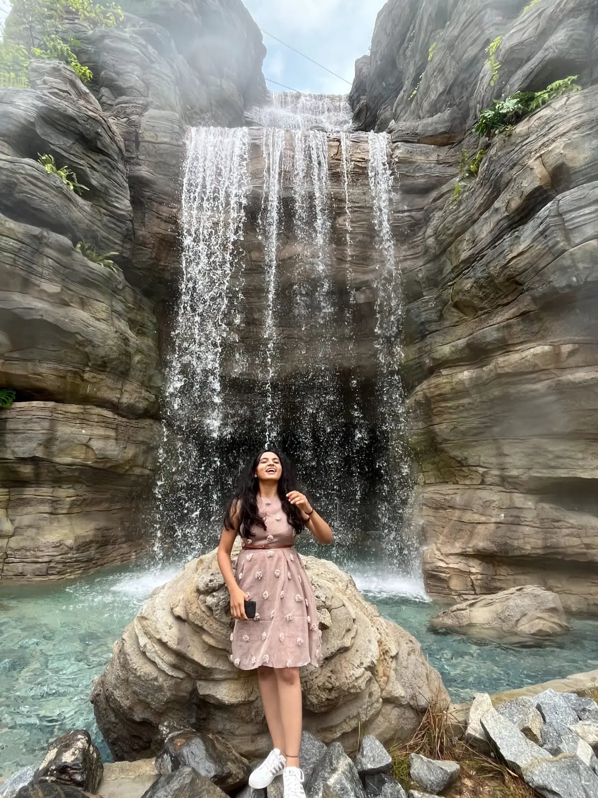
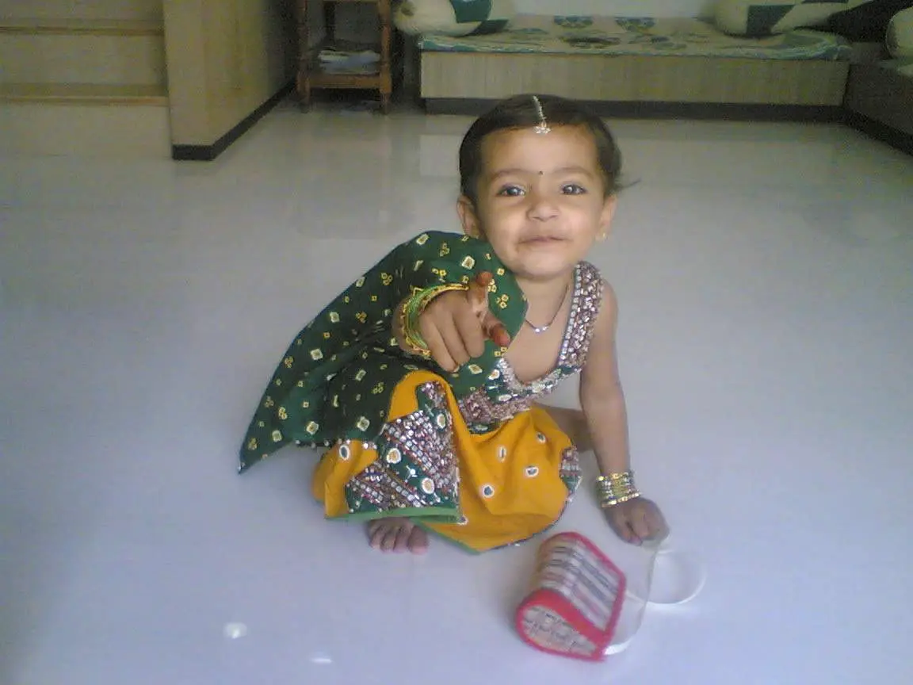
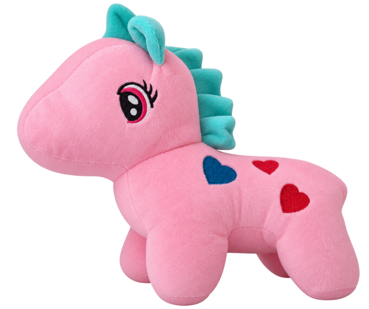
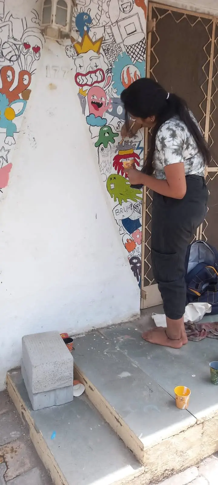
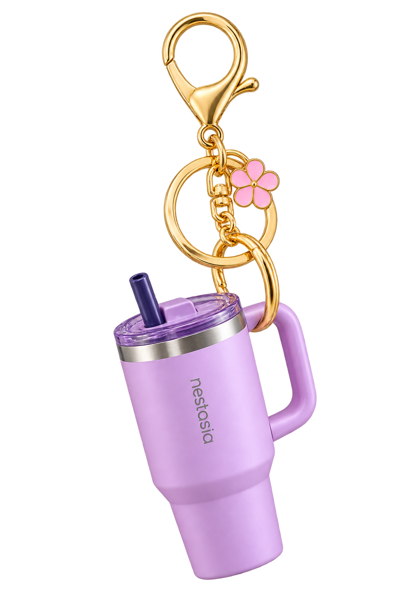
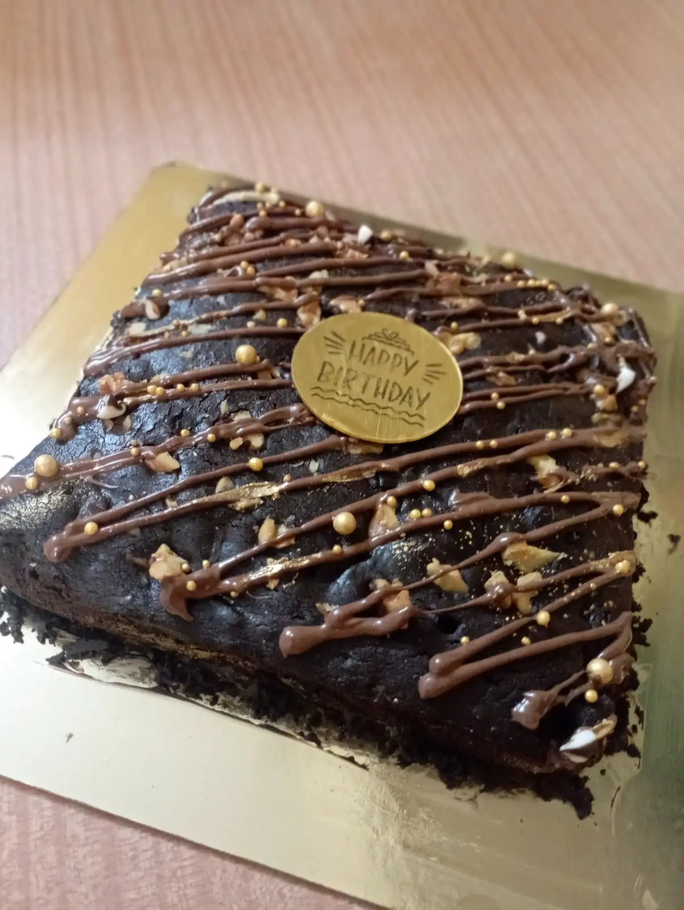
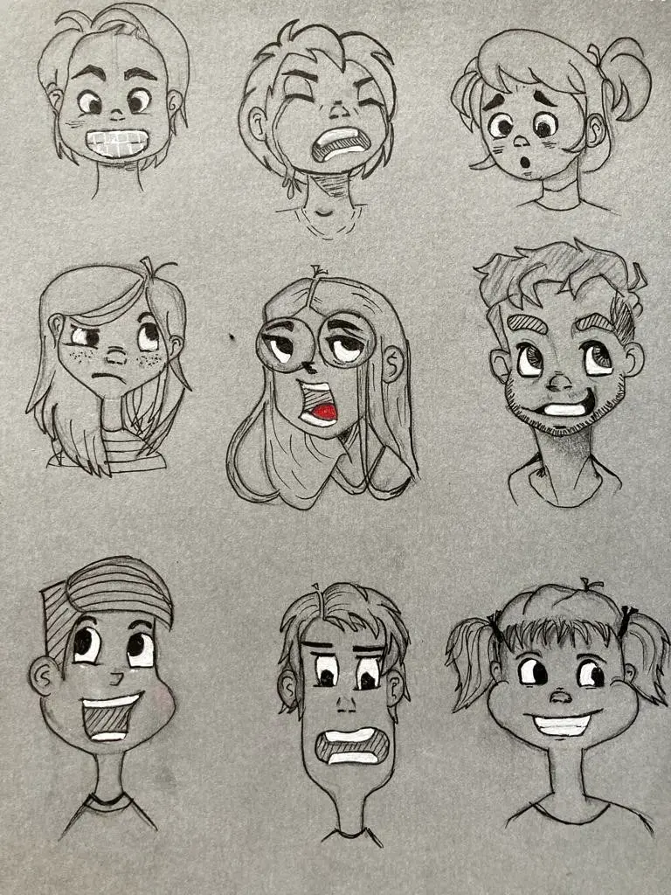

I enjoy photographing places, textures, and little details that make me stop and look twice.
A compilation of a few things I love, enjoy and believe in.
Drag them around, click to explore, and switch the lights on or off.


I enjoy photographing places, textures, and little details that make me stop and look twice.

I love trying new activities, especially when they come with a little adventure.

Travelling lets me experience unfamiliar places, cultures, and perspectives beyond my everyday world.

A reminder to keep becoming the person my younger self was already imagining.


I enjoy creating art across different mediums, scales, and surfaces.


Cooking and baking help me slow down, experiment freely, and reset after a busy day.

Sketching is how I explore ideas, observations, and anything that catches my attention.